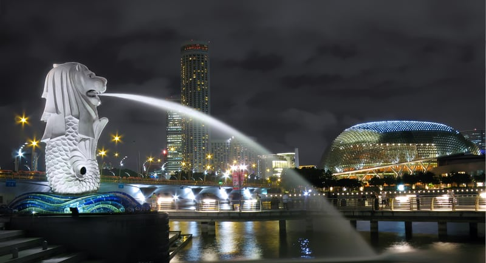
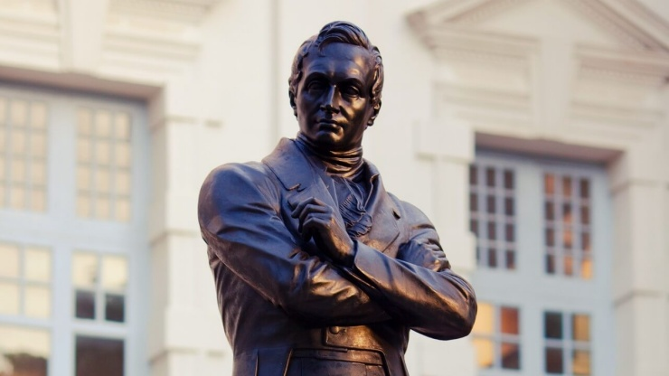
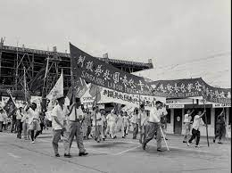

Istoria StatuluiFondarea Statului:Numele Singapore a derivat din cuvintele limbii Malay, singa (leu) și pura (oraș). Folclorul atribuie aceste nume unui prinț din Sumatra secolului al XIV-lea, numit Sang Nila Utama, care s-a adăpostit pe insulă după o furtună, și care a redenumit-o Orașul Leilor, după ce a zărit aici un leu feroce. Primele dovezi ale locuirii Singapore-ului sunt din secolul III-lea d.Hr. Insula era un adăpost a imperiului Srivijaya din Sumatra și purta numele Temasek (Orașul Mării). Temasek a devenit rapid un important centru comercial, dar a decăzut spre sfârșitul secolului XIV. Mai sunt puține rămășite ale vechiului Temasek în Singapore, dar arheologii din Singapore au adus la suprafață dovezile civilizației și locuirii sale. În timpul războaielor Malaiezo-Portugheze din 1613, a fost spulberat de către trupele portugheze. Portughezii au deținut controlul în secolul XVI, olandezii în secolul XVII, dar în majoritatea timpului insula a fost ocupată, în principal, de pescari și ocazional de pirați. Perioada colonială: În 1819, Sir Thomas Stamford Raffles a debarcat în insula principală. Sesizând potențialul insulei, Raffles a semnat un tratat cu Sultan Hussein Shah din partea companiei British East India Company, cu scopul de a dezvolta Singapore ca port comercial, marcându-se astfel începutul erei moderne. Ajutorul lui Raffles, William Farquhar, a preconizat perioada de dezvoltare economică și migrația etnică. În anul 1858 insula era guvernată de către Biroul companiei The British India. În 1867 Singapore a fost recunoscut oficial ca teritoriu colonial englez, răspunzător direct al Coroanei. În 1869, insula avea o populație aproximativă de 100 000 de locuitori. Al II-lea Război Mondial:În timpul celui de-al Doilea Război Mondial, armata imperială japoneză a invadat Malaya, care a culminat cu bătălia de la Singapore. Armata britanică, nepregătită, a fost înfrântă în șase zile, și a predat insula. Japonezii au ocupat-o până la returnarea acesteia Marii Britanii, la septembrie 1945, la o lună de la capitularea Japoniei. Pe insulă, japonezii au preluat celebra închisoare Changi, devenită azi un memorial în memoria miilor de soldați britanici uciși de trupele de ocupație japoneze. În muzeul închisorii Changi se păstrează câteva fresce pictate chiar de deținuți. Rudele celor uciși aici vin în pelerinaj aproape zi de zi. Epoca modernă sau postcolonială: Singapore a devenit un stat auto-guvernat în 1959. După referendumul din 1962 pentru alipire, Singapore s-a alăturat Malayai împreună cu Sabah și Sarawak pentru a forma Statul federal al Malaysiei la 16 septembrie 1963. Și-a câștigat suveranitatea, în mod oficial, la 9 august 1965. Mica națiune a trebuit să fie auto-suficientă și să dea piept cu multe probleme, precum: lipsa majoră de locuri de muncă, lipsa locuințelor, lipsa teritoriului și a resurselor naturale. Între 1959 și 1990, s-au creat numeroase locuri de muncă, s-a ridicat foarte mult nivelul de trai și s-a pus în practică un program la scară mare de construcție de locuințe. Infrastructura economică a țării a fost dezvoltată, a fost oprită tensiunea interrasială și s-a creat un sistem de apărare națională, având la bază stagiul militar obligatoriu pentru fiecare locuitor de sex masculin. |